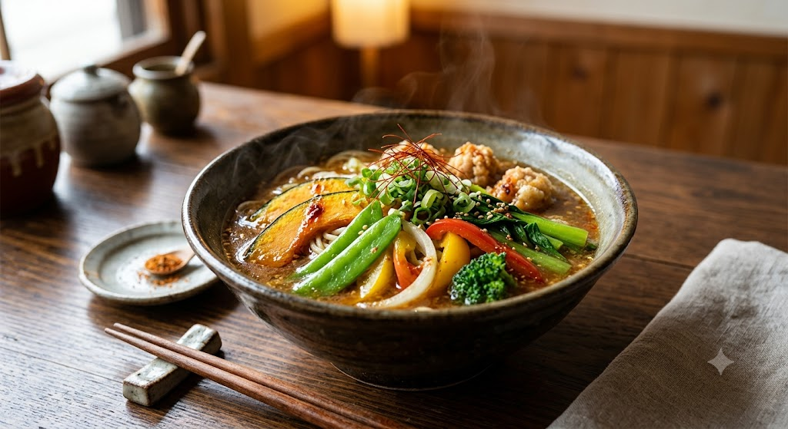
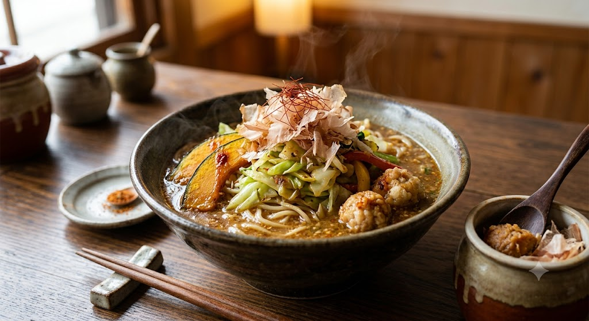
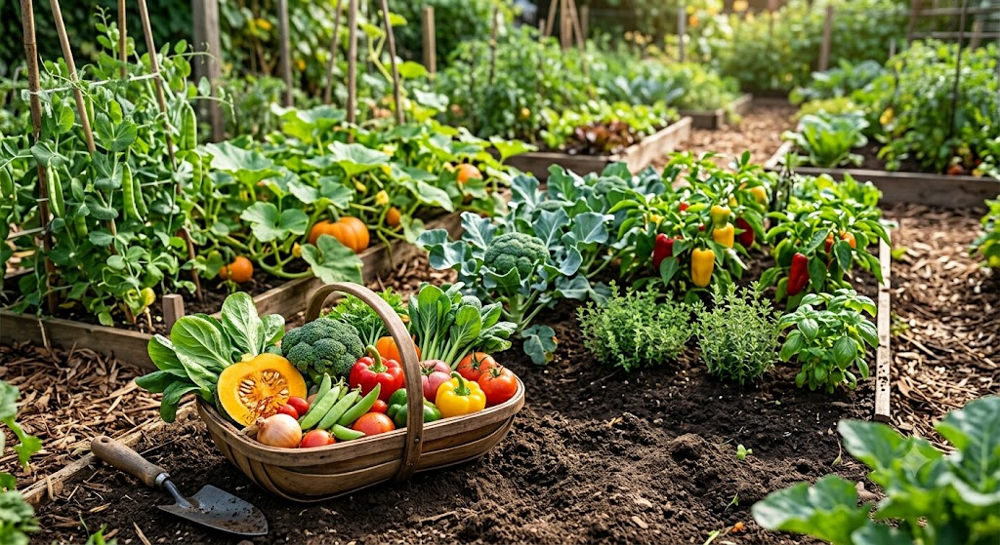

ご予約・お問い合わせ
023-688-8078
山形・蔵王の麓で愛される
食事と仕出しの「与右ェ門亭」

味噌ラーメンをベースに、たっぷりの野菜と独自トッピングを合わせた与右ェ門亭の顔とも言える一杯です。

与右ェ門亭では、できる限り自分たちの手で育てた自家菜園の野菜を使用しています。
旬の時期に収穫された野菜は、味が濃く栄養も満点。
南蛮めんのキャベツや、定食の小鉢などで、その季節ごとの「畑の恵み」をお楽しみください。
2階大広間完備。大人数のお集まりや、ご自宅での法要にも対応いたします。
うな重、天丼、幕ノ内など、ご予算に合わせた会席料理をご用意いたします。
マイクロバスでの送迎も可能です。お酒を伴う宴会や法事も安心です。
2階には大人数収容可能な広間がございます。親族のお集まりや地域の会合に。
| 店名 | お食事・仕出し料理 与右ェ門亭（よえもんてい） |
|---|---|
| 住所 | 〒990-2313 山形県山形市松原342-13 |
| 電話番号 | 023-688-8078 |
| 営業時間 |
昼 11:30〜14:00 夜 17:00〜19:30 |
| 定休日 | 不定休 |
| 駐車場 | 店舗前にゆとりのあるスペースあり |
| アクセス | JR蔵王駅より徒歩5分（旧羽州街道沿い） |